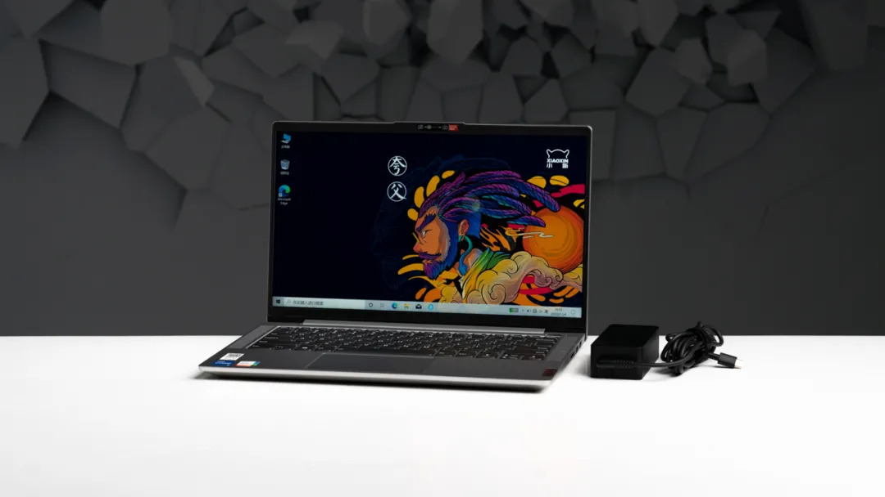
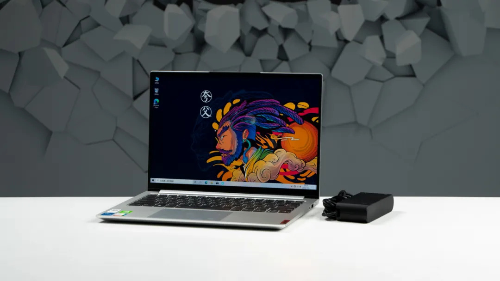
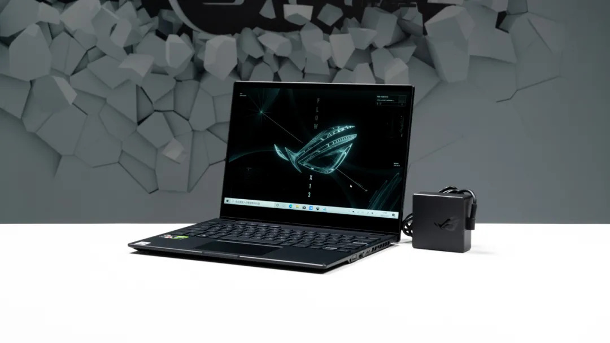

4500——5500
联想 小新Air14 2021款
|
配置参数
|
优缺点 |
参考图 |
- i5-1135G7 处理器
- MX450 2GB 独立显卡
- 16G 3200MHz 内存
- 512G 固态硬盘
- 14英寸 1080P分辨率 100%sRGB色域 IPS屏
- 电池容量 56.5Wh
- 厚 16.9~19.2mm
- 机身重 1.37kg
- 适配器重 329g
首发售价5299元
|
优点：
- 首发搭载GDDR6 MX450显卡，且性能表现较好
- 支持纯核显输出和混合输出切换
- 高负载时风扇噪音较小
|

|
|
缺点：
- 高负载下表面温度高
- 唯一的C口被适配器占用
- 没有采用WIFI6网卡
|
购买建议：
- 想要体验最新的显卡
- 对静音体验有一定要求
- 暂时不打算更新WiFi6路由器
|
6500——7500
联想 小新Pro14
|
配置参数
|
优缺点 |
参考图 |
- i5-1135G7 处理器
- MX450 2GB 独立显卡
- 16GB 4266MHz 内存
- 512GB 固态硬盘
- 14英寸 2240*1400分辨率 100%sRGB色域 IPS屏
- 电池容量 61Wh
- 厚 14.6~16.68mm
- 机身重 1.33kg
- 适配器重 407g
首发售价5799元
目前市场价6399元
|
优点：
- 性能释放优秀
- 搭载16:10比例+2K高分屏
- 搭载双独立雷电4接口
|

|
|
缺点：
- 接口种类和数量较少
- 同模具的YOGA 14s有90Hz高刷，显卡性能更好的Pro 14却没有
- 高负载下，键盘高温面积较大
|
购买建议：
- 对性能释放有较高需求
- 对屏幕素质有一定要求
- 不介意使用扩展坞的人
|
7500——8500
ROG 幻13
|
配置参数
|
优缺点 |
参考图 |
- R7 5800HS 处理器
- GTX1650 4GB 独立显卡（Max-Q）
- RTX3080Laptop 16GB XG显卡扩展坞（150W）
- 16GB 4266MHz 内存
- 512GB 固态硬盘
- 13.4英寸 1920*1200分辨率 100%sRGB色域 120Hz刷新率 IPS触屏
- 电池容量 62Wh
- 厚 17.09mm
- 机身重 1.33kg
- 适配器重 392g
- 显卡坞重 1.135kg
首发售价8499元
XG显卡扩展坞售价12999元
|
优点：
- 支持独有的PCIe 3.0x8带宽显卡拓展坞
- 屏幕素质不错，120Hz+16:10比例，且支持360°翻转
- 使用液金作为CPU导热介质
|

|
|
缺点：
- 接口较少，需要拓展坞补足
- 内存性能较低，影响显卡性能发挥
- 显卡拓展坞噪音较大
|
购买建议：
- 对高性能翻转本有需求
- 对外接更高性能的显卡有需求
- 拥有富埒天子的家庭条件
|